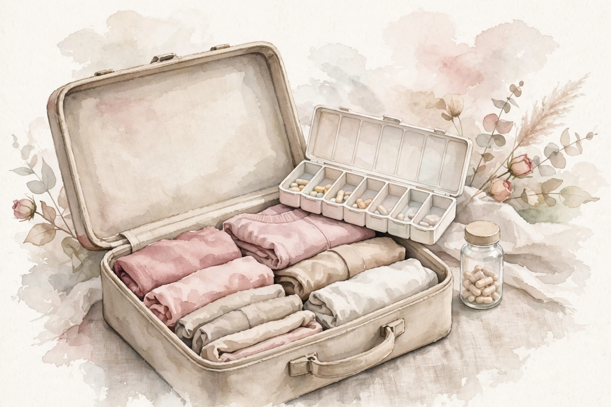

トップ ＞ インナーケア・サプリ ＞ 旅行・外出時の持ち運びと管理
旅行・外出時の持ち運びと管理

旅行や出張のとき、サプリメントをどう持っていくかは小さな悩みです。ボトルごと持つと荷物になり、小分けにすると表示が手元から離れます。この記事では、持ち運びと管理の工夫を整理します。
日数分だけを分けるのが基本
持ち出す量は、泊数×1日分が基本です。朝と夜に分かれるものは、それぞれの回数分を数えます。余分に1日分を加えておくと、予定が延びたときにも対応できます。帰宅後に余った分は、元のボトルに戻さず、そのまま使い切る方が管理が簡単です。
小分けには、1日分ずつ仕切りのあるケースや、小さな袋が便利です。日付を書いておくと、飲んだかどうかの確認がしやすくなります。
表示の控えを、写真で持っていく
小分けにすると、パッケージの表示が手元に残りません。商品名、目安量、原材料名、賞味期限が写るように写真を撮ってスマートフォンに入れておくと、外出先でも確認ができます。複数のサプリメントを持っていく場合は、それぞれの写真を撮っておくと、重なりの確認にも使えます。
海外への旅行では、持ち込みに関する決まりが国ごとに異なる場合があります。量が多い場合や心配な場合は、事前に公的な案内で確認しておくのが確実です。
移動中の保管は、高温になる場所を避ける
車の中や、直射日光の当たる窓際は、温度が上がりやすい場所です。移動中はバッグの中でも、日陰になる位置に置くなどの配慮をします。ホテルに着いたら、洗面所ではなく、部屋の中の涼しい場所に置くのが、表示の保管方法の案内に沿う形です。
旅行中は食事の時間がずれやすく、飲むタイミングも崩れがちです。朝食のテーブルに置くなど、自宅と同じ「合図」を旅先でも作っておくと、飲み忘れが減ります。
長期の旅行や出張では、もう少し工夫が要ります。1週間を超える場合は、日数分の小分けが多くなるため、週ごとに袋を分けるなど、ひと目で残りが分かる形にすると管理が楽になります。時差のある海外旅行では、飲むタイミングを現地時間に合わせるか自宅の時間に合わせるかで迷うこともあります。判断に迷う場合は、出発前に販売店や専門家へ相談しておくと安心です。帰宅後は、余った小分け分を元のボトルに戻さず、旅行用ケースのまま使い切る方が管理が簡単です。次の旅行のために、ケースと表示の写真をセットで保管しておくと、準備の手間が減ります。旅の準備のチェックリストに「サプリメントの小分けと表示の写真」を加えておくのがおすすめです。
なお、帰宅後に小分けケースを洗って乾かしておくと、次回の準備がスムーズです。旅の道具と同じく、使い終わりの手入れまでが一連の管理です。表示の写真も、商品を買い替えたら撮り直しておきましょう。
セラフィナ「持つのは日数分、表示は写真で。旅先でもいつもの合図を作るのが続けるコツだね」